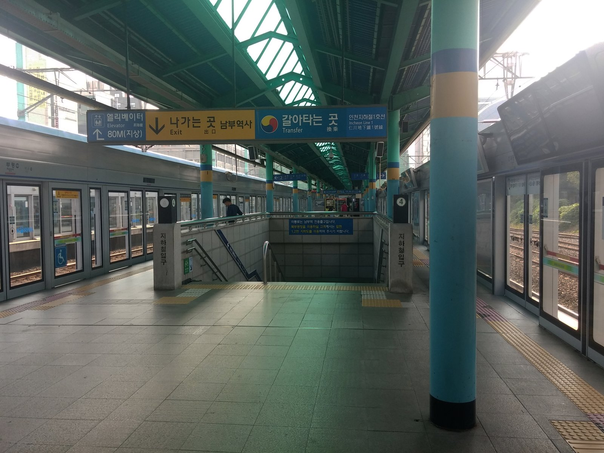
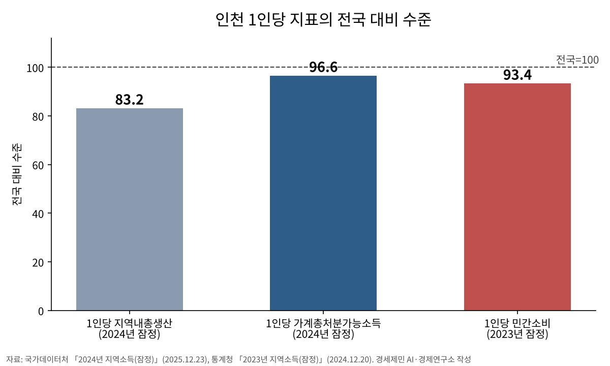

[인천경제&경제사①] 인천 1인당 생산 11위·가계소득 7위, 인천 안 소비는 특·광역시 꼴찌
생산·소득은 2024년 시·도 17개, 소비는 2023년 특·광역시 8곳 순위
벌이는 생산보다 낫고 인천 안 소비는 처졌다
AI경제저널=김갑봉 기자 | 인천은 생산 순위와 시민 소득 순위가 다르다. 2024년 인천의 1인당 지역내총생산은 4119만원으로 시·도 17개 가운데 11위였다. 같은 해 1인당 가계총처분가능소득은 2687만원으로 7위였다. 인천 안에서 쓴 1인당 민간소비는 2023년 2166만원으로 특·광역시 8곳 가운데 꼴찌였다.
생산과 소득 숫자는 국가데이터처가 2025년 12월 23일 공표한 「2024년 지역소득(잠정)」에 나온다. 소비 숫자는 통계청이 2024년 12월 20일 공표한 「2023년 지역소득(잠정)」 값이다. 민간소비는 사는 곳이 아니라 그 지역 안에서 쓴 돈을 잰다. 이 연재는 생산과 소득과 소비의 어긋남에서 출발한다.
1. 생산 11위, 가계소득 7위
지역내총생산은 인천 땅에서 만든 부가가치다. 인천의 공장과 항만과 공항이 만든 것은 누가 벌었든 인천 생산에 잡힌다. 인천 시민이 서울에서 일하고 받은 임금은 여기에 잡히지 않는다.
가계총처분가능소득은 가계가 실제로 손에 쥐고 쓸 수 있는 소득이다. 국가데이터처는 2025년 12월 판부터 옛 「개인소득」을 이 이름으로 바꿨다. 계열도 달라져 옛 판 금액과 바로 견줄 수 없다. 지역 밖에서 벌어 온 임금까지 더해 재므로 서울로 출퇴근하는 시민의 임금도 인천 몫으로 들어온다.

2024년 인천의 1인당 가계소득은 전국 평균 2782만원의 96.6%였다. 1인당 생산은 전국 평균 4948만원의 83.2%에 그쳤다. 벌이가 생산보다 전국 평균에 더 가깝다. 가계총처분가능소득 총액 증가율도 7.1%(명목)로 시·도 17개 가운데 세종(7.2%) 다음이었다.
인천 가계총처분가능소득 총액은 2024년 명목 81조9000억원이다. 같은 계열로 보면 인천 1인당 가계소득은 2023년 2542만원으로 시·도 17개 가운데 8위였다. 2024년 7위로 한 계단 올랐다.
생산과 가계소득 사이를 잇는 것이 지역총소득이다. 2024년 인천 지역총소득은 132조4000억원으로 지역내총생산 125조6000억원의 105.4%였다. 인천 시민과 기업이 밖에서 벌어 온 소득이 밖으로 나간 소득보다 많다는 뜻이다.
지역총소득 가운데 피용자보수가 53.7%, 영업잉여와 재산소득이 16.2%, 순생산·수입세가 8.6%를 차지한다. 일한 대가가 인천 소득의 절반을 넘는다. 피용자보수는 임금·급여에 고용주의 사회부담금을 더한 값이다.

2. 1인당 생산에 견주면 가계소득 65%, 전국은 56%
1인당 생산에 견준 1인당 가계소득 비율은 2024년 인천이 65.2%, 전국이 56.2%다. 생산은 땅에 남고 임금은 사람을 따라 집으로 온다. 다만 지역 밖에서 번 소득도 들어 있어, 생산의 65%가 가계로 간다고 읽으면 틀린다.
3년여 전에도 같은 진단이 나왔다. 김하운 이사장은 2023년 3월 인천경제 연재를 시작했다. 첫 편에서 인천의 1인당 개인소득과 민간소비가 광역시 최하위 수준이라고 짚었다. 관심이 지역내총생산 중심으로 쏠렸다며, 시민 행복을 보려면 개인소득을 봐야 한다고 했다.
그 글은 2021년 값을 다뤘다. 당시 공표 판(통계청, 2022년 12월)에서 인천 1인당 개인소득은 2132만원으로 특·광역시 8곳 가운데 7위였다. 지금 계열(2025년 12월 판)로 다시 매기면 6위이고, 2024년에도 6위다. 소득은 바닥 바로 위였고, 바닥은 소비였다.
2026년 7월 출범한 민선 9기의 취임사와 첫 시정보고에는 지역내총생산 수치 목표가 없었다. 10월 26일 박찬대 시장은 「인천 미래산업 리파워링」 비전을 내놓았다. 목표는 임기 내 평균 경제성장률 5%다. 박 시장은 산업 성장의 목표가 시민 소득을 높이는 데 있다고 했지만, 이날 발표에 소득과 소비의 수치 목표는 보이지 않았다.
3. 인천 안 소비는 2021년에도 2023년에도 꼴찌
2022년 12월 판에서 2021년 인천 1인당 민간소비는 특·광역시 8곳 가운데 꼴찌였다. 2023년 값도 전국 평균의 93.4%로 꼴찌다. 2023년 판 기준 인천 1인당 개인소득은 전국의 96.6%였다. 버는 쪽은 전국 평균에 붙었는데 인천 안 소비는 처진다.
2023년 1인당 소비 순위는 시·도 17개로 넓혀도 11위다. 대구의 1인당 개인소득은 2376만원으로 인천보다 90만원 적다. 그런데 1인당 민간소비는 2231만원으로 인천보다 65만원 많다. 인천은 더 벌고 인천 안에서는 덜 쓴다.
2024년 판에는 시·도별 1인당 민간소비 표가 없다. 인천 민간소비는 2024년 실질 기준 0.4% 늘어 국내 전체(0.9%)의 절반에 못 미쳤다. 같은 해 인천 실질 지역내총생산은 3.1% 성장했다. 생산이 늘어난 만큼 인천 안 소비가 따라가지 못했다.
존 메이너드 케인스는 1936년 『고용, 이자 및 화폐의 일반이론』에서 소득과 소비의 관계를 소비성향이라 불렀다. 늘어난 소득 가운데 소비로 쓰는 몫인 한계소비성향이 클수록 승수도 커진다고 봤다. 무역이 있는 열린 경제에서는 늘어난 투자의 승수 효과 일부가 다른 나라 고용으로 간다고도 적었다. 케인스가 따진 단위는 지역이 아니라 한 나라였다.
4. 2025년 인천 실질 성장률 -1.2%
그사이 생산마저 흔들렸다. 분기 지역내총생산을 모은 9월 공표 기준으로 2025년 인천 실질 성장률은 -1.2%다. 3월 첫 공표 때 0.5% 감소에서 더 내려간 값이다.
9월 공표에서 국내 전체는 1.1% 늘었다. 2026년 2분기 인천 성장률은 0.4%(전년 동기 대비)로 국내 전체 3.7%에 크게 못 미쳤다. 같은 분기 인천 건설업은 5.2% 줄었다.
번 돈이 인천 안 소비로 이어지지 않는 까닭은 아직 숫자로 가려지지 않았다. 집을 사느라 진 빚이 소득을 묶었는지, 인천 밖으로 소비가 빠져나갔는지는 재지 않았다. 이 연재가 앞으로 하나씩 잴 물음이다.
국가데이터처는 2025년 공표부터 잠정 추계와 확정 추계를 함께 낸다. 2024년 값은 올해 12월 확정 추계 때 바뀔 수 있다. 그때 2025년 잠정치가 함께 나오면 지켜볼 것은 둘이다. 생산이 줄어든 해에 시민 소득이 버텼는지, 그리고 인천 안 소비 증가율이 국내 전체를 따라잡았는지다.
참고문헌
논문과 연구서
- John Maynard Keynes, 『The General Theory of Employment, Interest and Money』, London: Macmillan, 1936.
기관 자료
- "2024년 지역소득(잠정)", 국가데이터처, 2025.12.23., https://mods.go.kr/board.es?mid=a10301130300&bid=243&act=view&list_no=442567
- "2023년 지역소득(잠정)", 통계청(현 국가데이터처), 2024.12.20., https://mods.go.kr/board.es?mid=a10301130300&bid=243&act=view&list_no=434448
- "2021년 지역소득(잠정)", 통계청(현 국가데이터처), 2022.12.22., https://mods.go.kr/board.es?mid=a10301130300&bid=243&act=view&list_no=422615
- "2026년 2/4분기 실질 지역내총생산(잠정)", 국가데이터처, 2026.9.29., https://mods.go.kr/board.es?mid=a10301130300&bid=243&act=view&list_no=447191
- "민선9기 인천광역시장 취임사", 인천광역시, 2026.7.1., https://www.incheon.go.kr/mayor_9/MA01010000/3080916
- "제312회 인천광역시의회 임시회 제1차 본회의 시정보고", 인천광역시, 2026.7.13., https://www.incheon.go.kr/mayor_9/MA01010000/3082239
[사진 출처]
- [사진1] HunkinElvis, "NewSongdo5.JPG", 2009.5.5., 위키미디어 공용, 퍼블릭 도메인, https://commons.wikimedia.org/wiki/File:NewSongdo5.JPG
- [사진2] IRTC1015, "Korail-Bupyeong Station-Platform-2.jpg", 2017.6.25., 위키미디어 공용, 퍼블릭 도메인, https://commons.wikimedia.org/wiki/File:Korail-Bupyeong_Station-Platform-2.jpg
관련기사
- [인천경제&경제사①] 인천 1인당 생산 11위·가계소득 7위, 인천 안 소비는 특·광역시 꼴찌
- [인천 산업연관분석③] 공장은 더 만들고 일자리는 줄었다, 인천 산업의 두 얼굴
- [인천 산업연관분석②] 인천 중간재, 인천산은 4분의 1… 2020년 표로 다시 본 의존 구조
- 인천시와 군·구는 무엇을 연구에 맡기나, 정책연구 727건을 다 세어 봤다
저작권자 © AI경제저널 무단전재 및 재배포, AI학습 및 활용 금지